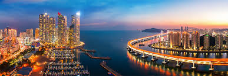

Seoul
Seoul is the heart of South Korea. It's where old palaces meet tall skyscrapers, and where everything from shopping to street food is just around the corner.

Busan
Love the beach? Then you’ll love Busan. This southern city is known for its beautiful coastline, fresh seafood, and the famous Busan International Film Festival.
Jeju
Jeju Island is like a peaceful escape. It’s full of nature — waterfalls, volcanoes, and cozy cafés. A perfect getaway spot!

Gyeongju
Step back in time in Gyeongju. This city is full of ancient tombs, temples, and stories from Korea’s long history.
Incheon
Incheon is where many visitors first arrive in Korea. It’s got a big airport, a cool Chinatown, and is super close to Seoul.